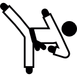

carlos enrique jaramillo aros
Hobbies
Series
Series basadas en DC Comics, tales como The Flash logrando abarcar gran parte de estos escritos lograr ser de las actividades que mas disfruto realizar puesto que lleva una trama completamente diferente a las demas series de Tv, logrando mezclar ciencia ficción por parte de los producctores y humanidad por parte de los personajes que allí se presentan.
Actualmente Se está esperando el lanzamiento de la tercer temporada que será en el mes de octubre de 2016, en la que se plantea presentar mayor inmersividad para los fans de esta trama dado que muestra una de los numeros del comic mas vendido. the FlashPoint, en este The Flash lográ viajar al pasado y cambia drasticamente la linea del tiempo y se encuentra con gran cantidad de sorpresas.
tae-kwon-do
Como segunda actividad importante que disfruto hacer durante mis tiempos libres (que hoy dia, finalizando mi Carrera, es cada vez menos), es practicar esta arte marcial, en la que la disciplina, el auto control y la superación personal son primordiales para poder tener exito no solo en los combates sino integralmente.
Durante mi época escolar en el colegio panebianco americano, rodeado de gran cantidad de distractores, se presento la oportunidad de proyectar la energía de manera focalizada y lograr centrarce en una actividad de superación integral.
Una de la categorias de ésta disciplina es el combate cuerpo a cuerpo en el que con mucho dedicación y trabajo logré conseguir la medalla de plata en los torneos Zonales Occidente en el año 2010.
correr

Muy ligado al deporte, Tae-Kwon Do. El atletismo amateur es una de las actividades en las que logró encontrar satisfacción dado que el unico obstaculo que me detiene para la resistencia soy yo mismo.
De esta manera cada día que inicio ésta actividad, busco superar mi anterior registro marcado, para asi poder demostrarme que por mas agotado que pueda estar siempre se podrá tanto mantener como superar los metas que se plantean todo con dedicación, esmero y entrega.
peliculas
En los dias en que el tiempo no es lo suficientemente ámplio para poder salir a realizar alguna actividad deportiva, sentarse con una buena compañia a disfrutar desde peliculas antiguas hasta las aun sin estrenar, es una de las activdades que pertenece a mis favoritas puesto que dentro de la exploración de un mundo irreal.
Ésta puede llevar no solo la visualización de experiencias externas sino tambien a la apropiación de éstas experiencias y lograr desconectarse la que alguna vez puede ser realidad pertubadora.
redes sociales
Por ultimo pero no menos importante, es el poder estar al tanto de la actulidad y de socializacion de formas de pensar, que por medio de las redes sociales es compartida por aquellos que de igual manera encuentran cierto refugio en el anonimato ó en el argumento de libre pensamiento para expresar su punto de vista en distintos escenarios que hacen que las redes esten en constante actualización.
Mis redes sociales: